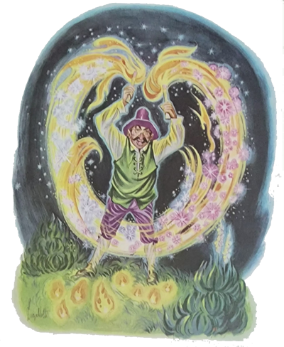
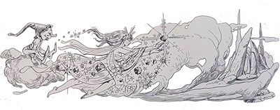
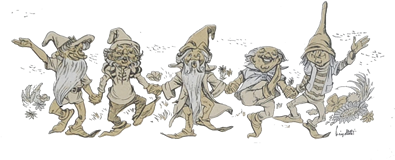
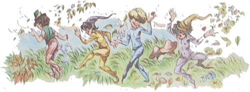
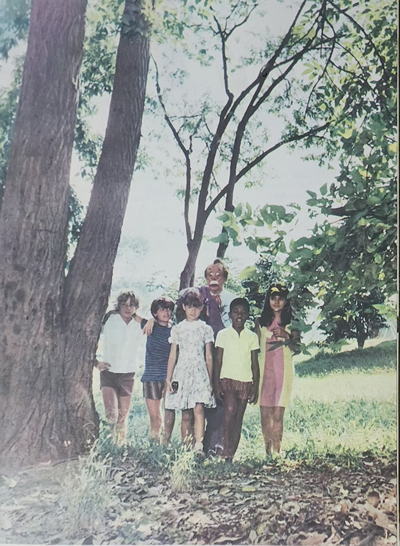
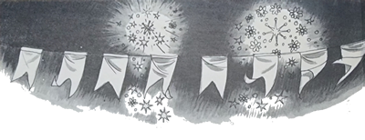
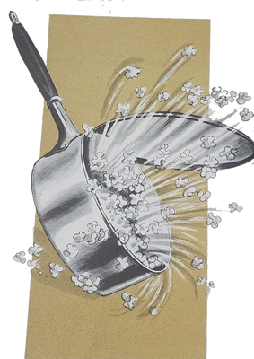
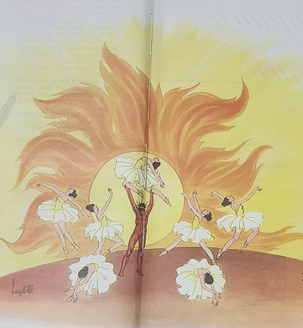

A noite seguinte estava mais fria. Portanto, depois do jantar o pessoal preferiu permanecer dentro de casa. Sentados na cozinha, onde no rústico fogão crepitava um braseiro confortador, o Arrelia e as crianças preparavam-se para ouvir modas de viola executadas por Nhô Zico. O Arrelia desejava que as crianças apreciassem as músicas do interior, e havia convidado Nhô Zico para a execução, o qual aceitara de bom grado. Enquanto esperavam que ele afinasse a viola, nossos amigos fartavam-se comendo bolo de fubá e paçoca de amendoim que a dona da fazenda muito gentilmente pusera na mesa para que eles se distraíssem.
Logo depois, Nhô Zico começou a dedilhar as cordas da viola e a cantar modinhas uma atrás da outra, só interrompidas pelas palmas entusiásticas do Arrelia e sua turminha.
Mais tarde, esgotado o repertório, Nhô Zico também se sentou à mesa a fim de colaborar na devastação da paçoca de amendoim e do bolo de fubá. Ele e o Arrelia começaram a comentar sobre as músicas do interior enquanto que as crianças ouviam com atenção.
A conversa foi pulando de assunto em assunto e terminou por parar na estória dos fogos misteriosos. Isto porque tinham ouvido uns estampidos ao longe, e o Arrelia comentara:
- Puxa! O que estarão festejando? Hoje é algum dia especial?
Com um ar de profundo mistério, Nhô Zico respondera:
- Não se trata de festa. É o Gaudêncio. Está sempre fazendo isso.
Passados alguns minutos de silêncio em que todos ficaram ouvindo os estampidos longínquos, o Arrelia comentou:

- Se ele não está festejando nada por que então solta fogos? Não vá dizer-me que é de tristeza ou de raiva!
Nhô Zico olhou espantado o Arrelia e exclamou:
- Puxa! É mais ou menos isso! O Gaudêncio era tão apaixonado por fogos que mesmo depois de morto . . .
- Mesmo depois de morto? – interrompeu o Arrelia. Já vi tudo. Quer dizer que quem está soltando fogos é um fantasma?

Nhô Zico concordou com seriedade, olhando calmamente as crianças que pareciam prestes a deixar suas cadeiras.
- Não tenham medo – pediu ele. O lugar onde o Gaudêncio costuma soltar fogos é muito longe daqui. Não há perigo, não.
- Olhe, Nhô Zico – disse o Arrelia. Se o senhor quisesse explicar melhor esse assunto, não seria “nauda” mal.
- E por que não? – admirou-se Nhô Zico.
Depois de engolir mais um punhado de paçoca de amendoim, Nhô Zico começou a falar novamente:
- Esse tal de Gaudêncio era o maior fogueteiro que havia por aqui. Fabricava fogos tão bonitos e diferentes que a gente nem pode imaginar. Era um artista dos fogos de artifício. O homem fazia o que queria com eles. Era admirado por todos. Não tinha inimigos, a não ser um, o Coronel Fábio. Que inimizade! Um não podia ver o outro. Nunca vi ódio igual. E tudo começou por causa dos fogos de artifício. Esse Coronel Fábio era muito orgulhoso e não queria prosa com ninguém. Tinha fama de fazer as melhores festas da região. Que festas! E quando junho chegava? A sua fazenda era a mais procurada.
Não havia quem não elogiasse as festas juninas do Coronel Fábio. Menos o Gaudêncio. E sabem por quê? Porque jamais tinha sido convidado pelo coronel para enfeitar as suas festas com os fogos que fabricava.
- E por que o coronel não o “convidauva”? – quis saber o Arrelia com curiosidade.
- Porque era orgulhoso, muito orgulhoso – esclareceu Nhô Zico. Embora desejasse de todo o coração ter as suas festas animadas pelos fogos do Gaudêncio, queria que ele se oferecesse sem ser convidado.
- Que bonito! – indignou-se Jaci. O que pensava esse coronel? O que se julgava ele?
Nhô Zico deu risada:
- Coisa de gente orgulhosa, minha filha. É assim mesmo.
Mais um punhado de paçoca, e Nhô Zico prosseguiu:
- Muitas festas de junho se passaram, e nem o Gaudêncio nem o coronel haviam resolvido se rebaixar. Um dia, apareceu na casa do Gaudêncio um homem de confiança do coronel.
- Nhô Gaudêncio, preciso falar com o senhor.
- Falar comigo? Ué, e sobre o quê? Se é da parte daquele despeitado sem gosto que jamais deu valor aos meus fogos . . .

- Pois é justamente sobre isso que vim falar. Ele resolveu usar seus fogos nas próximas festas de junho, pois acha que sem eles as festas jamais serão completas.
- Ah! Então o danado tomou jeito? Olhe que custou. Mas também agora não sei se vou aceitar. Já perdi a vontade.
O enviado do coronel só faltou ajoelhar-se. Pediu, implorou, disse que o coronel estava muito arrependido de não ter convidado antes o Gaudêncio, mas que havia sido falta de coragem. O Gaudêncio saboreou aquelas palavras como se fossem feitas de mel. Percebeu que o momento era bom para uma desforra:
- Olhe, diga ao coronel que vou pensar. Passe noutro dia que darei a resposta.
De nada adiantou a insistência do outro. O Gaudêncio manteve-se firme. Ia pensar. O coronel que esperasse.
- Êta fogueteiro “danaudo”, não, Nhô Zico? Não quis perder a oportunidade de vingar-se! O homem era fogo!
- Pois é. O maior sonho dele era participar das festas do coronel, e agora, realizado o seu sonho, queria tirar o maior proveito possível.
Mas o Gaudêncio estava decidido a judiar do coronel. Quando o enviado voltou, ele foi logo dizendo:
0 Olhe aqui. Ainda não tive tempo de Pensar. Volte noutro dia.
- Mas Nhô Gaudêncio! O coronel está esperando sua resposta! O que vou dizer a ele?
- Que ainda não resolvi. Ele que espere. Eu não esperei tanto?
O outro insistiu o mais que pode. O fogueteiro porém era teimoso. E o enviado do coronel teve de voltar uma porção de vezes. Era a grande vitória do Gaudêncio.

Quando ele achou que já havia judiado bastante do Coronel Fábio, disse ao enviado:
- Olhe, vontade eu não tenho nenhuma, e por mim não ia perder tempo com o coronel. Mas não quero que os outros falem que sou rancoroso. Portanto, está certo. Vou preparar alguns fogos para as próximas festas de junho.
O enviado do coronel ficou todo contente:
- Ainda bem que concordou. Meu patrão vai ficar satisfeito.
O Gaudêncio tratou de usar todo o seu conhecimento para fabricar os melhores fogos de artifício que já havia fabricado. Ninguém encontrava mais o homem fora de casa. Trabalhava como se fosse a última coisa de sua vida.
junho chegou e com ele as festas maravilhosas, tão esperadas por nós. O Gaudêncio encheu dois carros de boi com os fogos de artifício e rumou para a fazenda do coronel. Foi recebido pelo mesmo homem que havia encomendado os fogos:
- Mas que prazer! Finalmente vamos ter festas de verdade! Pena que tenha demorado tanto para acontecer, não é mesmo?
- A culpa não foi minha. Se o coronel houvesse reconhecido antes que suas festas não eram completas sem os meus fogos . . .
- Isso é verdade. Felizmente ainda está em tempo. Hoje vamos apreciar a sua arte, não é verdade?
- São os melhores fogos que já fiz. E acho que também os melhores que foram feitos no mundo.
O Gaudêncio tratou de montar os seus fogos. Que trabalho! A festa já estava começando. Um cheirinho de pipoca tomava conta de tudo. Doces, quentão . . . As festas do Coronel Fábio tinham de tudo. Depois, enquanto se realizava o baile na tulha de café, o fogueteiro deu início ao espetáculo. Parecia que o mundo vinha abaixo. O baile foi interrompido e todos correram para ver aquela maravilha. No céu formavam-se as mais estranhas figuras: árvores de ouro, chuvas de prata . . .
O coronel não costumava tomar parte nas festas que realizava. Ficava sentado na varanda de sua casa, assistindo de longe. Era o seu divertimento preferido. Naquela noite, quando ouviu os estampidos e levantou os olhos para o céu, ficou paralisado pelo espetáculo. Era um sonho! Não era possível! Levantou-se e foi ver de perto o que estava acontecendo. Aí encontrou o Gaudêncio cuidando de seus fogos. Ficou espantado. Estendeu a mão ao fogueteiro:

- Então resolveu rebaixar-se, hein? Sem participar das minhas festas, você não podia considerar-se um fogueteiro completo, não é? Como foi que resolveu vir acender os seus fogos aqui? Perdeu o orgulho?
O Gaudêncio custou a falar, tão espantado ficou:
- Como é?!
- Quero saber por que resolveu vir aqui. Diziam que era orgulhoso. No entanto teve de rebaixar-se.
- Eu? Rebaixar-me? O senhor deve estar louco! Se mandou convidar-me! Eu não queria vir! O senhor insistiu tanto que fiquei com pena!
- O quê? Não mandei convidar ninguém! Que brincadeira! Jamais eu faria tal coisa! Vá saindo! Rebaixar-me a um fogueteiro! E não dou valor aos seus fogos!
Louco de raiva e vergonha, o Gaudêncio contou toda a estória. Procurou descrever o tipo do homem que se dizia enviado do coronel.
- Ah! – exclamou o Coronel Fábio depois de Pensar um pouco. Já sei de quem você está falando! É o Silveira, um dos meus ajudantes! É louco por uma brincadeira! Não é a primeira vez que ele faz uma dessas!

O coronel mandou chamar o Silveira e pediu-lhe explicações:
- O que você andou aprontando aí com o fogueteiro?
- Apenas uma brincadeira. Eu queria fazer uma festa diferente. Assim resolvi enganar o coitado do Gaudêncio. Ele caiu tão fácil, mas tão fácil que fiquei com pena. Como é inocente!
Não é preciso dizer como ficou o pobre do Gaudêncio. Partiu como um foguete para cima dos dois. Se eles não corressem . . .
Com a interferência de outras pessoas, o fogueteiro foi levado para fora da fazenda, não sem antes haver prometido:
- Ouça, Seu Coronel: o senhor desprezou os meus fogos, os meus fogos de artifício. Isso não é permitido a ninguém. A partir de agora, não vou fazer outra coisa que não seja soltar fogos de artifício até o senhor me pedir perdão.
O Gaudêncio cumpriu o prometido. Mudou-se mais para perto da fazenda do Coronel Fábio e não
fim de semana em que a terra não tremesse e o céu não se iluminasse com os fogos de artifício. Não havia quem dormisse nem animal que ficasse quieto.
Passado algum tempo, o coronel estava a ponto de enlouquecer. Era demais! Enviou então um mensageiro para falar com o fogueteiro:
- O coronel manda perguntar quanto você quer para acabar com o foguetório. É só falar que ele manda o dinheiro.
O Gaudêncio não gostou da proposta:
- O quê? Ele tem coragem de oferecer-me dinheiro? Então pensa que a minha vingança está à venda? Pois que espere. Vou aumentar a quantidade de foguetes.
- Não faça isso! O homem não aguenta mais!
- Pois espere para ver se faço ou não!
- Tenho pena dele! Diga o que é para fazer!
- O coronel sabe muito bem. Só tem um jeito de conseguir que eu pare com o foguetório.
- Pois diga!
- Ele tem de vir até aqui e pedir perdão do que me fez. Não adianta perder tempo que não há outro jeito.
O mensageiro do coronel ficou horrorizado:
- Você acha que um homem orgulhoso e importante como o coronel vai chegar ao ponto de pedir perdão?
O Gaudêncio perdeu a paciência:
- Olhe! Chega de conversa. Já falei que não tem outro jeito. Ou ele me pede perdão ou a festa continua.
O outro foi embora louco da vida
O foguetório continuou mais forte do que nunca. O coronel mandou outros mensageiros com uma infinidade de propostas. Menos pedir perdão. Isto ele não fazia de nenhum modo. O Gaudêncio continuou a sua vingança. Passaram-se anos. O coronel morreu, logo depois o Gaudêncio morreu, mas o foguetório continuou. Dizem alguns que já viram o fantasma do Gaudêncio soltando fogos enquanto que mais adiante o fantasma do coronel grita sem parar: “Chega! Chega!” Mas perdão ele não pede.

- Que dois teimosos, não? – comentou o Arrelia. Bem que podiam entrar num acordo e deixar os outros em paz, não é “verdaude”?
- É, mas não tem jeito. São teimosos como não sei o quê.
- É bem interessante essa estória – disse Iberê. Só que me deu fome.
O Arrelia suspirou:
- E o que é que não dá fome nesse “camarauda”? Olhem. Para dizer a “verdaude”, eu também comeria alguma coisa.
Como ia entrando uma das moças da fazenda, o Arrelia disse a ela:
- Não ia mal um cafezinho acompanhado de pipocas, não é mesmo? Com o friozinho que está fazendo.
A moça aprovou a ideia com entusiasmo e dirigiu-se ao fogão. Não demorou muito, ouviu-se o pipocar do milho na panela de ferro e sentiu-se o cheirinho gostoso de café.
Logo os nossos amigos estavam empenhados em devorar aos punhados a pipoca quentinha acompanhada de café. O Arrelia disse aos seus companheiros:
- Vocês sabem que as pipocas são bailarinas encantadas que vieram do Sol?
- Ih! Onde você foi buscar isso, Arrelia? – perguntou Jaci sacudindo a cabeça.
Nhô Zico admirava o Arrelia com curiosidade.
- Não é mentira, não! – exclamou o Arrelia. Você não acredita?
Comeu mais algumas pipocas e contou:
- As pipocas eram bailarinas muito famosas lá no Sol. Viviam dançando, sempre vestidas de branco. Elas somente podiam viver no Sol por causa do calor. Sem calor, ficam dormindo, dormindo. Um dia resolveram deixar o Sol e vir conhecer a Terra. Construíram um balão e vieram para cá. Como a temperatura da Terra era muito fria para elas, assim que desceram não aguentaram mais de sono. Antes, porém, de dormirem, cortaram o balão em pedacinhos e cada uma se cobriu com um. E assim vivem até hoje. Só acordam quando estão na panela bem quente. Aí pensam que se encontram no Sol e saltam e dançam com seus vestidos muito brancos e leves de bailarinas.
- É bonitinha a estória – comentou Iberê. Só que agora vou ficar com medo de mordê-las. Quantas bailarinas já matei!
O Arrelia bocejou e disse:
- Bem, vamos deixar os fogos de artifício e as pipocas e encontrar o sono, pois ele está-nos chamando.
- A mim já chamou há muito tempo – esclareceu Nhô Zico, cabeceando de olhos cerrados.
Todos se levantaram, Nhô Zico apanhou a viola e foram encontrar o sono.
